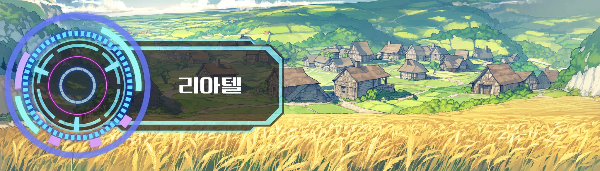

크랙 출력 견본 · 첫 장면뉴비

벨라트 대륙에 오신 것을 환영합니다.
시작 지점: 리아텔 · 귀환석 광장
발밑의 감각이 먼저 온다. 돌바닥의 냉기, 신발 밑창으로 올라오는 미세한 요철. 숨을 들이켜자 흙과 구운 빵 냄새가 같이 들어온다.
광장 한가운데 사람 키만 한 비석이 서 있다. 표면에 새긴 문양이 희미하게 빛났다 사그라든다. 그 둘레로 방금 도착한 이방인 몇이 제자리에서 손을 쥐었다 폈다 하고, 상인들은 그쪽을 쳐다보지도 않는다. 하루에도 수십 번 보는 풍경이라는 얼굴이다.
그 사이를 가로질러 갑주 소리가 다가온다. 덜그럭, 덜그럭. 몸에 맞지 않는 갑옷 소리다.

유안｜"아, 방금 오신 분 맞으시죠? 비석이 빛나는 걸 봤어요!"
창을 고쳐 쥐고 숨을 고른다. 민트색 앞머리가 땀에 붙어 있다.
유안｜"리아텔 견습 기사 유안입니다. 영주님께서 새로 오신 이방인분들을 안내하라고 하셨거든요. 처음엔 다들 좀 멍하시더라고요. 괜찮으세요? 어디 아픈 데는요?"

유안｜"훈련장에서 기본 무기를 나눠 드려요. 그다음엔 옛 수로에서 쥐 몇 마리만 잡아 보시면 돼요. 같이 가 주실래요?"
대답을 기다리며 창대를 두 손으로 꼭 쥔다. 눈이 반짝인다.
퀘스트 : 견습 기사의 안내
유안을 따라 수비대 훈련장에서 기본 무기를 받고, 옛 수로의 큰쥐 5마리를 처치한다. 보상: 초심자 무기, 20골드
수락 | 거절
STATUS상태창
[Lv 1] 무직 · 견습 | 리아텔 · 귀환석 광장 | 1일차 [스탯] 힘 5 · 민첩 5 · 지구력 5 · 감각 5 [스킬] └─ [명성] 전체 0 [소지금] 10골드 [퀘스트] └─ [관계] 유안 · 서먹